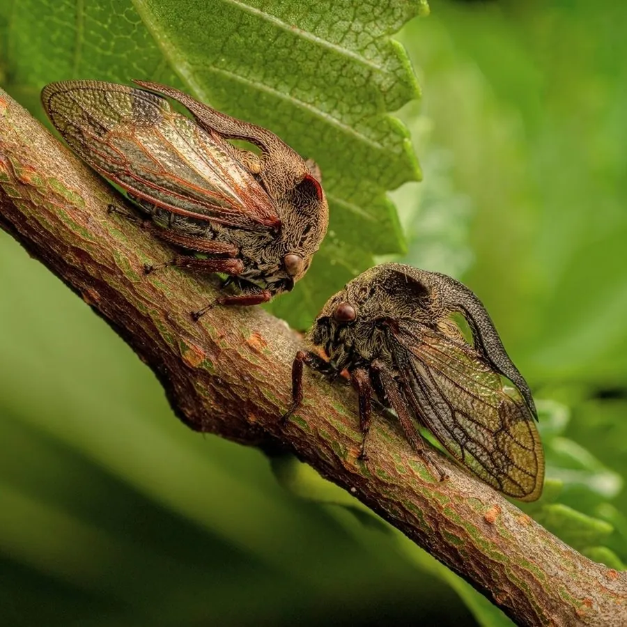

昆虫 · 动物界
角蝉 Centrotus cornutus

前胸背板向前后延伸成角状突起的蝉类，外形像长着犄角的小怪物，靠吸食植物汁液为生，受惊时弹跳逃走。
- 分类
- 门节肢动物门纲昆虫纲目半翅目科角蝉科属角蝉属
- 栖息环境
- 草地、灌丛和森林边缘，成虫停在植物茎叶上
- 地理分布
- 欧亚大陆，中国多地有分布
- 保护级别
- 暂无评估
物种志
角蝉成虫体长 8–10 mm，体色褐色或灰褐，前胸背板向后延伸成尖锐的角状突起，像戴着头盔的骑士，因此得名“角蝉”。它的外形在蝉类中十分特别，常常被误认为是植物的刺或小树枝。
角蝉分布于欧亚大陆，栖息于草地、灌丛和森林边缘。它是刺吸式昆虫，用口器插入植物组织吸食汁液；受惊时弹跳能力很强，可以迅速逃离危险。它的体色和纹理与树皮接近，停息时更难被发现。若虫生活在地面或植物根部，形态与成虫差别较大。角蝉科的许多种类具有拟态能力，会模仿植物的刺、芽或蚂蚁，以躲避捕食者。目前它没有IUCN 的正式评估，中国未将其列入国家重点保护野生动物名录。
形态与习性
- 食性刺吸植物茎叶的汁液
- 体长8–10 mm
- 角状突起前胸背板向后延伸成尖锐的角状结构
- 栖息地草地、灌丛和森林边缘
- 跳跃受惊时弹跳迅速，善于逃离
- 若虫生活在地面或植物根部
趣味知识
- 角蝉的前胸背板延伸成角，是它最醒目的标志。
- 受惊时角蝉会突然弹跳，瞬间消失在草丛中。
- 同科有些角蝉会分泌蜜露吸引蚂蚁，与蚂蚁形成互利关系。